Yuki, Ibaraki: things to do, food and stays
Yuki · Ibaraki
Yuki
Highlighted on the Ibaraki map.
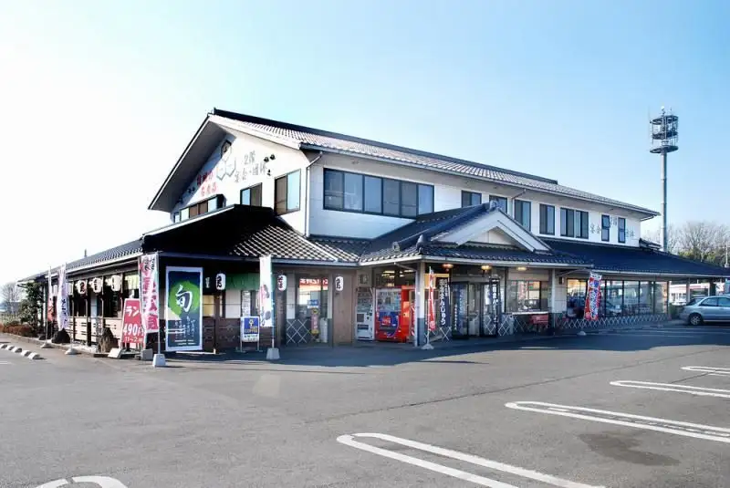
Stay
ホテルルートイン結城
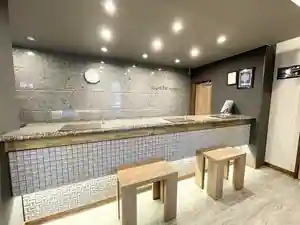
Hotel Route Inn Yuki
Hotel in Chuo, Yuki with Wi-Fi.
ＨＯＴＥＬ Ｒ９ Ｔｈｅ Ｙａｒｄ 結城
HOTEL R9 The Yard Yuki
備長炭の湯 ホテルクラウンヒルズ結城駅前
Bincho Sumi No Yu Hotel Kuraunhiruzu Yuki Ekimae
Hotel in Yuki with breakfast available.
旅館結城館
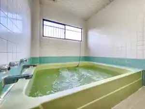
Ryokan Yuki Kan
HOTEL（TEN）
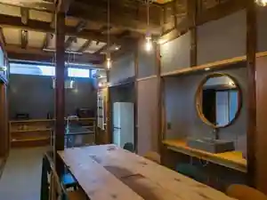
HOTEL(TEN)
HOTEL h365
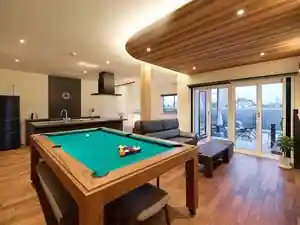
HOTEL h365
Dining
蕎麦専門店 愉庵
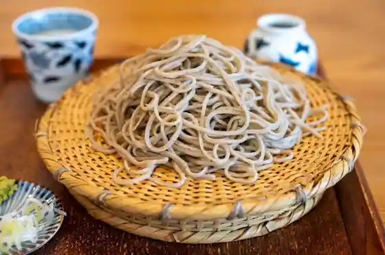
Soba Senmon Yu Iori
とんかつ なかお
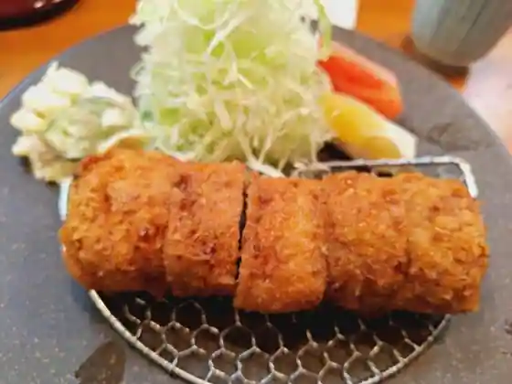
Tonkatsu Nakao
アルチザン・パティシエ・イタバシ
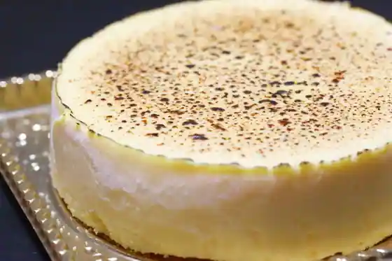
Aruchizan Pateishie Itabashi
Z庵
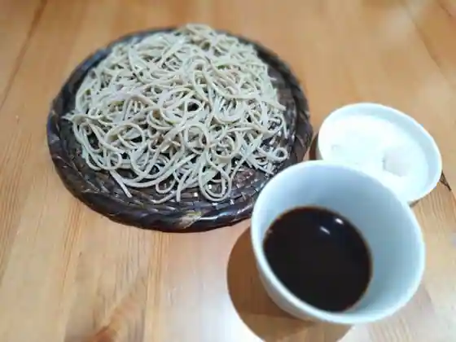
Z Iori
カフェ・ラ・ファミーユ
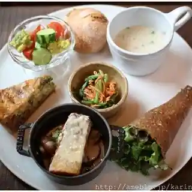
Cafe Ra Famiyu
ラーメンショップ 結城東店
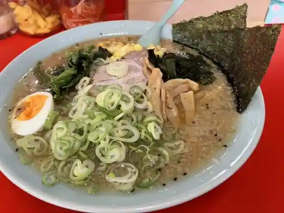
Ramen Shoppu Yuki Higashi
食い処 克貴
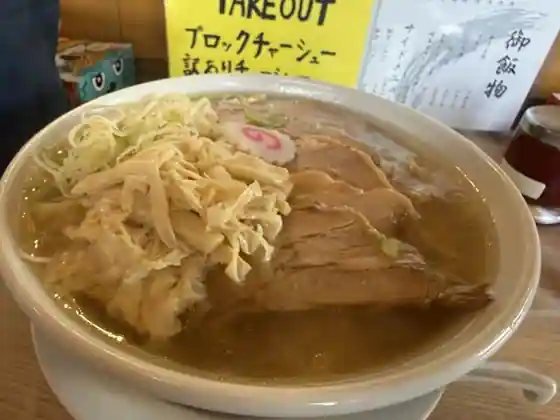
Kui Tokoro Katsu Takashi
はなぶさ
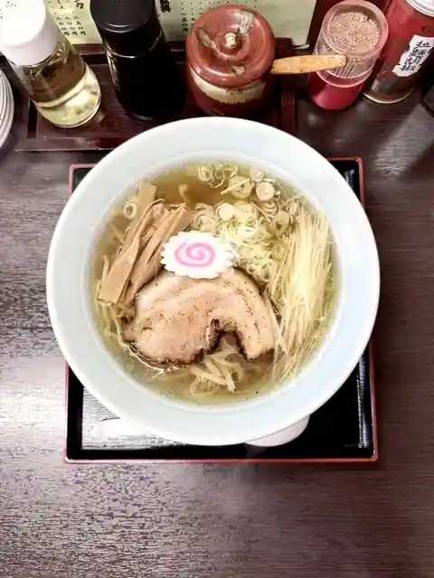
Hanabusa
Taikoh
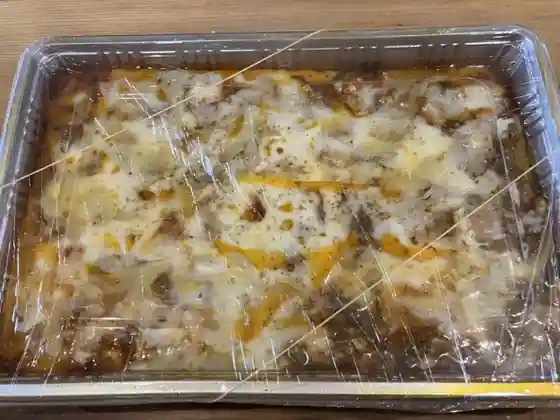
Taikoh
ズッカ
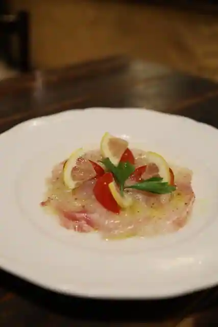
Zukka
喫茶 カヂノキ
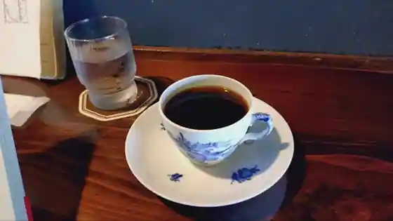
Kissa Kajinoki
麺や 杉寅
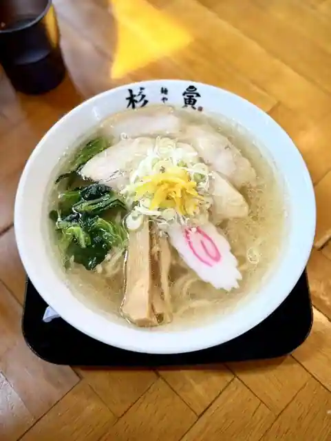
Men Ya Sugi Tora
元祖佐野ちゃんぽん とかの 結城店
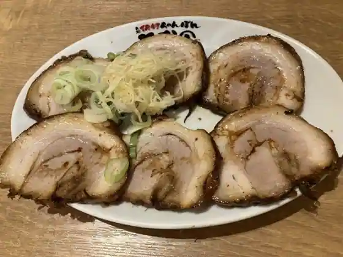
Ganso Sano Chanpon Tokano Yuki
手作り和菓子処 真盛堂
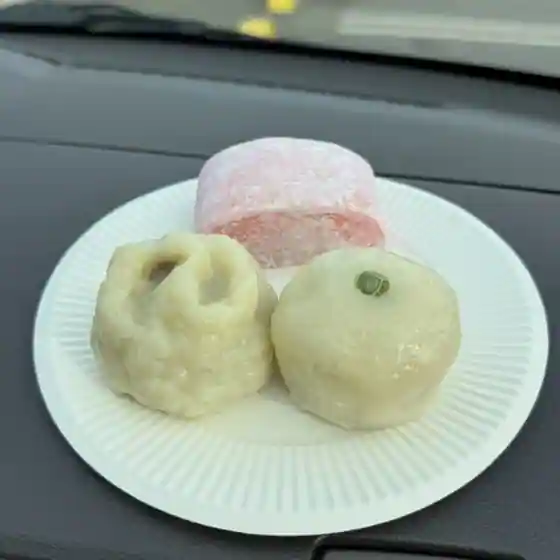
Tezukuri Wagashi Tokoro Shinzei Do
くぼた食堂
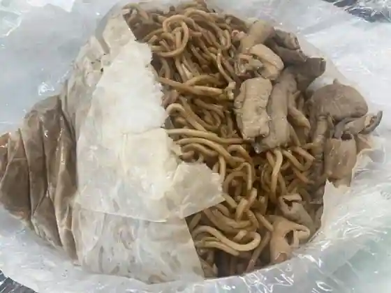
Kubota Shokudo
らあめん みそ神
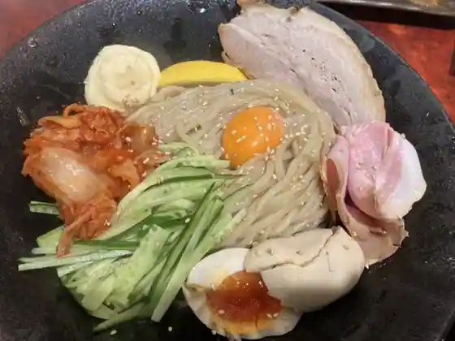
Ramen Miso Kami
コキュウ
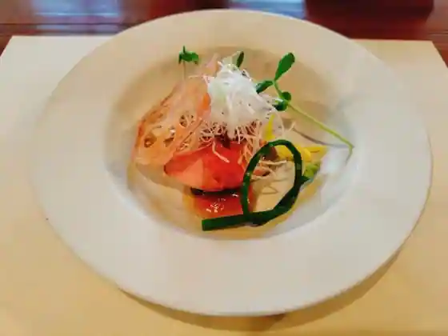
Kokyu
ぱんや ムムス
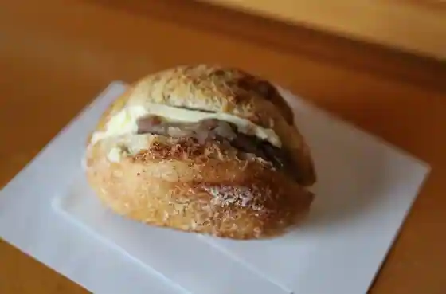
Panya Mumusu
甘味茶蔵 真盛堂
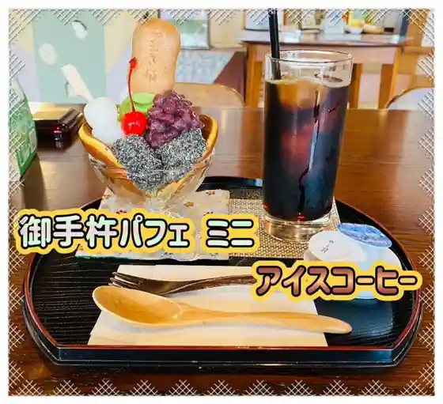
Amami Cha Kura Shinzei Do
ラ・カント
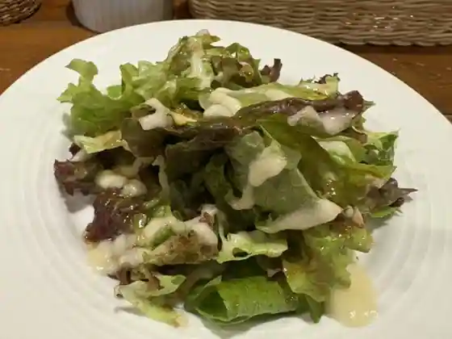
Ra Kanto
海鮮すし問屋 粋亭
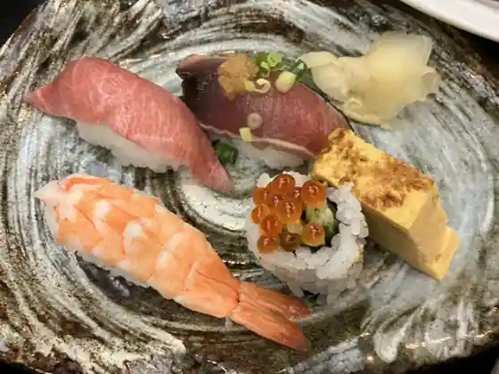
Kaisen Sushi Tonya Sui Tei
サディシ カレーランド
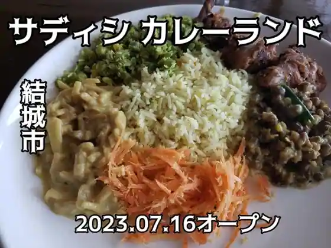
Sadishi Karerando
センプレ
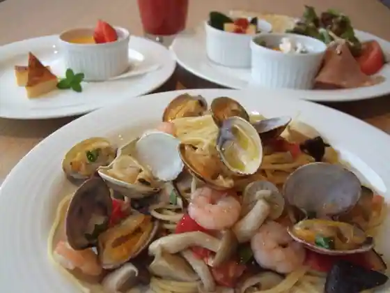
Senpure
ATAGO
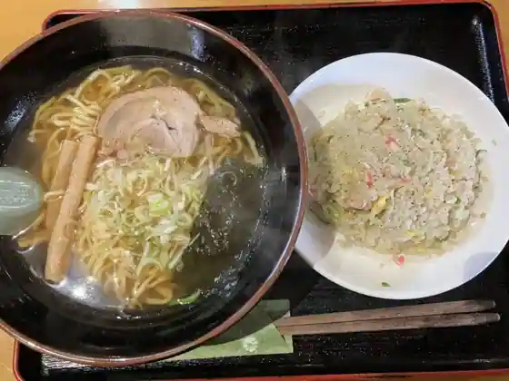
ATAGO
Sights
Tabi no Eki Yuki Tsumugi Center
Yuki Dentokogei Kan
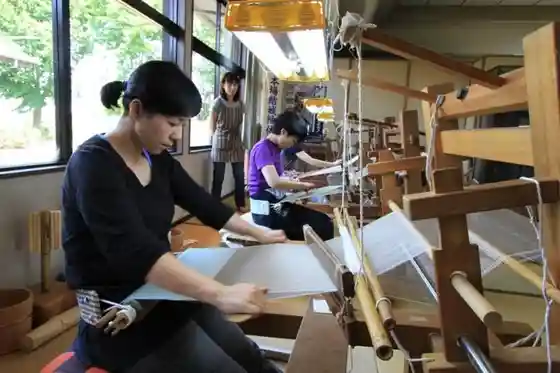
Tsumugi no Kan
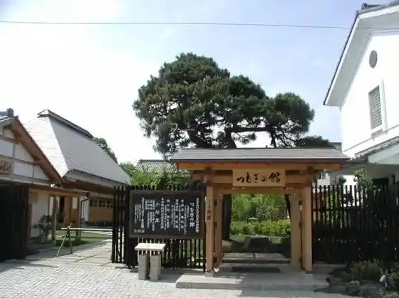
Tsumugi Village
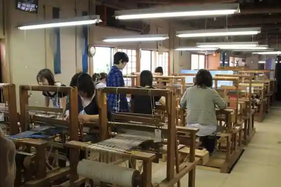
Castle Ruins Rekishi Park
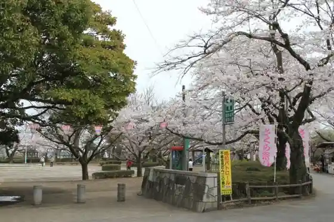
Yuki Kura Bi Kan
Yuki Shuzo
Buyu
JA Kita Tsukuba Famazumagatto (Kiraichi) Yuki Mise
Kintaro Ramen
Sushi Kappo Fukumatsu
Kotobuki Sushi
Katsu Taro Yuki Mise
Homba Yuki Tsumugi Kyodo Kan
DINING ATAGO
Men Ie Takumi